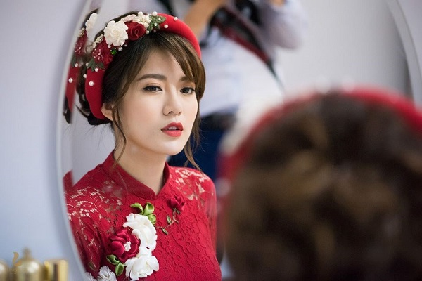

Trong văn hóa cưới hỏi của người Việt, tà áo dài thướt tha trong gió là hình ảnh quen thuộc, góp phần tôn lên nét đẹp Á Đông của mỗi nàng dâu. Chính vì thế, từ khâu tạo kiểu tóc cho đến phong cách trang điểm cô dâu đẹp khi diện kiểu trang phục này luôn là vấn đề giành được nhiều sự quan tâm của các cô gái chuẩn bị bước lên xe hoa..
Vì thế, qua bài viết này, Trống Đồng Palace sẽ mang đến cho tân nương tương lai các bí quyết trang điểm nhẹ nhàng nhưng vẫn làm say mê bao ánh nhìn khi mặc áo dài nhé!
Một lớp nền mỏng nhẹ, tự nhiên sẽ giúp các nàng dâu mới tránh được trường hợp “lão hóa” sau khi trang điểm. Vì thế, bạn không nên sử dụng quá nhiều kem nền hay đánh kem che khuyết điểm quá dày. Thay vào đó, sau khi sử dụng toner và kem lót, các nàng hãy phủ một ít kem che khuyết điểm lên những vùng da không đều màu.
Tiếp theo, bạn chỉ cần đánh một lớp nền thật mỏng và nhẹ là đã sở hữu được gương mặt thanh tú và tự nhiên khi mặc áo dài cưới.
Để xuất hiện với vẻ ngoài rạng rỡ trong ngày trọng đại, việc vẽ lông mày đẹp là khâu trang điểm không thể thiếu. Tuy nhỏ nhưng lông mày lại là bộ phận giúp cô dâu định hình gương mặt và cũng là yếu tố quyết định thần thái của bạn trong ngày vui. Một cặp lông mày đẹp có thể giúp khuôn mặt của các nàng trông tươi tắn và ấn tượng hơn đấy!
Họa tiết hoa lá dễ dàng tô điểm tấm thiệp cưới xinh xắn của bạn theo nhiều chủ đề khác nhau. Một trong những phong cách tiệc có liên kết mạnh mẽ với họa tiết hoa cỏ nhất là vintage và đặc biệt phù hợp với đám cưới mùa Xuân bừng bừng sức sống.
Sau khi kẻ mắt, bạn chỉ cần chuốt mascara cẩn thận rồi sử dụng phấn mắt ánh nhũ nhẹ nhàng là đã tạo được điểm nhấn cho “cửa sổ tâm hồn” của mình.
Trang điểm nhẹ nhàng cho đôi máBên cạnh khâu kẻ lông mày, đánh má hồng cũng mang lại cho các nàng dâu mới một khuôn mặt gương mặt rạng rỡ và tươi tắn hơn. Màu sắc phấn má ngày nay cũng khá đa dạng như hồng phấn, cam đào, hồng cam, cam san hô… Tùy theo phong cách và gu thẩm mỹ, các nàng hãy chọn cho mình một màu phấn má phù hợp khi diện áo dài cưới nhé!
VSau khi đánh kem nền, bạn hãy tán phấn má theo hướng hơi ngang từ giữa phần má rồi hơi chếch lên phía thái dương. Bạn lặp lại động tác này từ 2 đến 3 lần mỗi bên đến khi đôi má ửng chút hồng thì các nàng dừng lại.
Tô điểm môi xinhKhâu trang điểm cuối cùng nhưng lại không kém phần quan trọng là tô điểm cho đôi môi xinh. Khi diện áo dài cưới, màu sắc son nên thuộc tông nhẹ nhàng và nhã nhặn như hồng nhạt, cam hồng, hồng hay cam san hô… Nếu sở hữu đôi môi khô, bạn nên chọn những dòng son chứa nhiều dưỡng chất để giúp môi trông căng mịn hơn.
Để màu son lên chuẩn, cô dâu nên thường xuyên tẩy tế bào chết cho môi mỗi ngày. Buổi tối trước khi ngủ, bạn có thể thoa một lớp kem mỏng để dưỡng môi rồi rửa lại bằng nước ấm vào buổi sáng. Kiên trì thực hiện trong 1 tuần, các nàng dâu mới sẽ thấy hiệu quả rõ rệt đấy.
Nếu không còn thời gian để dưỡng môi, bạn có thể sử dụng các loại kem che khuyết điểm dành riêng cho môi. Ưu điểm của loại mỹ phần này là chỉ cần phủ lớp kem mỏng lên đôi môi thì màu son đã lên chuẩn nhất rồi đấy!
Xu hướng trang điểm nhẹ nhàng và tự nhiên vẫn luôn giành được nhiều sự ưu ái của phái đẹp, đặc biệt là trong ngày trọng đại. Trống Đồng Palace hi vọng với những gợi ý về phong cách trang điểm cô dâu mặc áo dài ở trên sẽ giúp các tân nương tương lai sở hữu được vẻ ngoài ưng ý nhất, thu hút vạn ánh nhìn nhé!